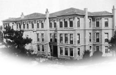

Bir Hayal Âleminden Hatıralar
1937 senesi yazı idi. Hatırasını ve şahsiyetini asla unutamadığım rahmetli üstadım Semih Mümtaz S. Beyefendi’nin Paris’ten döndüğünü haber almış, Ankara’dan birkaç gün için İstanbul’a gelişimden faydalanarak ziyaretine gitmiştim. Ne mükemmel, ne kusursuz İstanbul beyefendisi idi. Reşid Mümtaz Paşa’nın oğlu, Reisü’l-Küttab Ebubekir Mümtaz Efendi’nin torunu idi. Doğu ve Batı kültürüne enine boyuna sahipti. Giyinişi, konuşuşu, üslubu ile bir “İmparatorluk Osmanlısı” idi. Dikkat ederdim, “Osmanlı Devleti” demez; “Devlet-i Osmaniye” derdi. İstanbul Türkçesini böylesine mükemmel konuşan ve o adabı, teşrifat olarak değil de yaşayışının içinde yaşama hücceti halinde devam ettiren neslin son mümessillerindendi. Bana lütfen “Bey oğlum” der, teveccühünü esirgemezdi.

Reşid Mümtaz Konağı (Kaynak: wowTURKEY.com)
Nazik, hatırşinas, vefakârdı. Son senelerde malî vaziyetinin bozukluğu içinde o bolluk devrinin geleneklerini devam ettirmek için asla dışarıya vurulmayan, için için duyduğu sıkıntının izlerine dostlarının rastlayıp da kalpleri yaralanmasın diye, sık sık “Avrupa’ya” giderdi. Herkesin “Avrupa’ya” diye bildiği bu gurbet yolculuklarından çoğu Kahire’de yerleşmiş olan “Kalfa Hanım”lardan Gülizar Hanım’a misafirlik gidişi idi. Gülizar Hanım, Reşid Mümtaz Paşa konağından “çırak edilen”, yani evlendirilen “Saraylı”lardan birisi idi. Mısır’a yerleşmiş olan bir Türk’le evlenmiş, kocasının ölümünden sonra Kahire’de kalmıştı. Semih Mümtaz Bey, kendisine dadılık da eden, “Kalfa Hanım”ın ısrarlı davetleriyle gider, kış aylarını çoklukla orada geçirirdi.
O yıl Mısır’dan dönüşünde, kendisini biraz zayıf ve huzursuz bulmuştum. Öğleden sonra Boğaziçi’ne gidip gidemeyeceğimi sordu. Ankara’ya dönecektim. Bu eşine az rastlanır insanı bir daha görememek korkusu ile elemlenmiştim.
“Rumelihisarı’ndaki Mustafa Süreyya Bey Yalısı’nı satmışlar. Alanlar yıkacaklarmış. O yalıda gençlik hatıralarım var. Son bir defa gidip görmek istedim.”
Boğaziçi bütün çağdaşları gibi Semih Mümtaz için de mazi tahassürleri ile dolu, rüya âleminin bergüzar hatırası idi. O eski günlerden bahsederken, gözlerinin nemlendiğini hâlâ hatırlarım. Yolda bana, uzun uzun Boğaziçi yalılarından bahsetti. Önlerinden geçtikçe o gün için ya yakılmış, arsa haline gelmiş veya yerlerine eskinin zarafet ve asaletini asla temsil etmeyen beton yapılar ile bir garip hâl almış olanları bir bir gösteriyor, eskinin şeklini izahta hiç zorluk çekmeden canlandırıyordu.
“İşte şurada, Rumelihisarı’nda döndüğümüz yerde ahşap, kâr-ı kadim bir yalı vardı. Rıhtımı yüksekçe idi. Sandalla önünden geçtikçe telaş ederdik. Akıntı bizleri rıhtıma doğru iterdi. Fakat o günün kayıkçıları meslekten yetişmiş, yalı uşakları olduğu için, rıhtımın kenarına sürtünür, geçerdik. Bu ahşap yapıda Şehremaneti Muhasebe Müdürü Şefik Bey’le, kayınbiraderi üstat bestekâr Lemi [Atlı] Bey otururlardı. Kalabalık idiler. Haremde, selamlıkta; dadılar, bacılar, emektar uşaklar, bütün yaz mevsimince devam eden saz âlemlerine güçlükle kâfi gelirdi. Mehtapta yalının etrafına sıralanan kayıklardan çıt çıkmaz, yeni yeni besteler güzel seslerle, âfâkı inletirdi.
Bu yalıyı daha sonra Tophane Müşiri Zeki Paşa aldı, yıktı. Boğaziçi’nin Tanzimat’tan kalan güzel yalılarından birisi de böylelikle tarihe karıştı. Yerine şu gördüğünüz apartman misali binayı yaptılar. Zeki Paşa’dan son Halife Abdülmecid Efendi’nin oğlu Ömer Faruk Efendi’ye intikal etti. O da sattı. İşte görüyorsunuz ki, şimdi tütün deposu olmuş.”
Zeki Paşa’nın yalısını geçtik. Köşeyi döndüğümüz anda yeni yıkılmaya başlanmış olan Mustafa Süreyya Bey’in yalısı ile karşılaştık. Semih Mümtaz Beyefendi anlatmaya devam etti:
“Bakınız aradan ne kadar uzun zaman geçti ve Boğaz’ın hırçın sular bu yapıyı kaç mevsimdir dövdü, durdu. Şu an çıkan kerestelerin sağlamlığına bakınız. Bunlar, Lübnan’dan gelen sedir ağaçları idiler. Şu köşede, Mustafa Süreyya Bey’in selamlığı vardı. Rahmetli, yemeğe pek düşkündü. Kendisi yapardı. Bitişiğinde Profesör Kadri Raşit Paşa’nın Yalısı vardı ki, daha evvel Mekke Emiri Şerif Ali Haydar Paşa’nın kayınvalidesi Revhide Hanımefendi otururdu. Babamla kız kardeş çocukları oldukları için sık sık gider, rıhtımda balık avlardım. Yerle tavan yüksekliği en az beş metre idi. Üç, dört kişinin rahat geçebileceği kocaman kapılarının üzerine asılmış perdelerin haşmet ve zarafeti hâlâ gözümüm önündedir.
Şu ileriki köşede, Şura-yı Devlet Reisi Hacı Reşid Paşa’nın deniz üzerindeki geniş odasında, pek sevdiği nargilesini çekerek kalın sesiyle yalı önünden geçenlerle sohbet sesini duyar gibi oluyorum. Yazın karlı, buzlu nefis şerbetleri yalının alt katındaki şahnesine koydurtur, gelen gidene ikram ederdi.”
Cevdet Paşa Yalısı
Bebek’e doğru yürüdüğümüzü hatırlarım. Merhum üstat o bir daha dönmez güzel günlerin hatırası içinde kendisini maziye bırakmış gibi idi. Dedi ki:
“İşte şurada, Bebekli Saib Bey’in direkler üzerinde yükselen sahilhanesi vardı. Sahilhane ortada idi. İki tarafı geniş bahçe ile çevriliydi. Çarşı cihetindeki kapı selamlığa, öteki harem dairesine açılan büyük kapıları ile kervansaraya benzerdi. Selamlığında meşhur Hazine-i Hassa Nâzırı Ohannes Efendi otururdu.
Mabeyinci Faik ve Cevad Beylerin yalılarından sonra Mahmud Nedim Paşa’nın yalısı gelirdi ki, Bebek sırtlarını kaplayan güzel bahçeleri ile cidden kâşâne idi. Tarihçi ve âlim Ahmed Cevdet Paşa’nın yalısı, Mahmud Nedim Paşa’dan sonra gelirdi. Bu tarihi yalı Abdülhak Hamid Bey’in dedesinden Sadrazam Mütercim Rüşdü Paşa’ya, ondan da Ahmed Cevdet Paşa’ya intikal etmişti. Parasını, Midhat Paşa muhakemesinden sonra Sultan II. Abdülhamid beş bin altın olarak vermiş, Cevdet Paşa’ya hediye etmişti. Cevdet Paşa’dan sonra Mabeyinci Faik Bey’e, ondan da Sultan II. Abdülhamid’in kızı Ayşe Sultan’a geçti. İşte görüyorsunuz ki bunun yerinde şimdi sekiz on yalıcık, bir o kadar da apartman var. Geniş sofaları, altışar pencereli odaları, uzun koridorları, alt katında kubbeli hamamı ile selamlığın methalinde muazzam bir avlu ve akarsulu çeşmeleri, hizmetkâr bölümü ile arkadaki yüksek yamaçlara kadar genişleyen bahçesi, bahçe içinde ayrıca iki köşkü, araba yolu ile bu yalı bu âlemdi. Deniz üzerinde, geniş dolapları duvara gömülü bir orta salon vardı ki, mübalağasız asgarî otuz metre uzunluğundaydı. Bu yağlı boya dolaplarda Cevdet Paşa’nın binlerce cilt kitabı tasnifli olarak sıralanmıştı. Paşa bu odada oturur, eserlerini burada hazırlardı. Denize âşıktı. Gençliğinde Büyük Reşid Paşa kendisini salahiyetli ve mühim bir vazife ile Mısır’a göndermişti. Meşhur Keçecizade Fuad Paşa ile birlikte yaptığı bu seyahatte Boğaziçi hasretine dayanamamış, istikbali için kendine büyük faydalar temin edecek bu hizmetinden affedilmesini Reşid Paşa’dan şöyle rica etmişti:
Anub İstanbul’u feryâdım ile eylerim âhenk
Burada ûd ve kanun perdesin gûş ettiğim demler
Gelince yâde Cevdet, ağlarım sadr-ı keremkârın
Dürr-i lütfunda ekdârı ferâmuş ettiğim demler
Mevsimlerin İçinde
Semih Mümtaz, Sermed Muhtar Alus, Abdülhak Şinasi Hisar gibi Osmanlı neslinin son mümtaz mümessillerinin anlattığı dedeler ve nineler hayatının iç âlemini bilenler hiç kalmadı. Biz bu hayatı dinleyebilmiş olanlardan da eli kalem tutan bir avuç insan kaldık. Kendisinden dinlediklerimi not etmeme müsaade etmezdi.
“Bey oğlum, sohbet ediyoruz. Bunlar hafızanın içine yerleşmiş ve yaşamış olanların arkada kalmış hatıratı olamaz. Onlara haksızlık ve iftira olur. Dedelerimiz ve ninelerimiz, yani ecdadımızın hareketlerinde hiçbir şey tesadüflere bağlı değildi. Senelerin, mevsimlerin, ayların ve hatta günlerin mânâsı ve hususi kıymetleri vardı. Her şey ayrı bir nizam altında idi. Yapılanlar, idrak edilmiş devirlerin bıraktığı, müspeti menfiden, hayrı şerden, doğruyu eğriden, ayıran tecrübelerin mahsulü idiler. Hiç kimse, bu yerleşmiş nizamların ve âdetlerin haricine çıkmak ihtiyacını duymazdı. Çünkü bilirdi ki, kendisinden evvelkilerin, yapmış olduklarında bir “hikmet” vardır. Hayata bu doruluğuna inanılmış alışkanlıklar hâkimdi.
Mevsimler, başka başka dünyalar getirirdi. Fakiri, zengini, orta halis bu hayat nizamını dışında değildi. Herkes kendi haline göre idi. Tecessüs hem ayıp, hem günahtı. Servet tezahürleri ve gösterişlerini hoş görmemek, hatta bunlara rastladıkça mâni olmak, İslâmî bir ananeydi. Kendini bilen, zaten böyle hafiflikler yapmaz, yapamazdı. Bu telakki münhasıran hariçte değildi, evlerin içinde de aynı idi.
Kimsenin canının sıkılması diye bir mevzu hatırlamıyorum. Herkesin müspet bir işi, meşgalesi vardı. Ziyaretler de sıralı ölçülü idi. Konakların birer israf yuvası olduğu da doğru değildir. Bu büyük yapılarda birçok masraflar müşterek olduğu için, hayat daha iktisadî idi. Her evin büyük hanımı, geçim mesuliyetinin ağır yükünü omuzlarına alır, bunu zevk ve muvaffakiyetle yapardı.
Tarih Konuşuyor, Haziran 1965, sayı: 5.